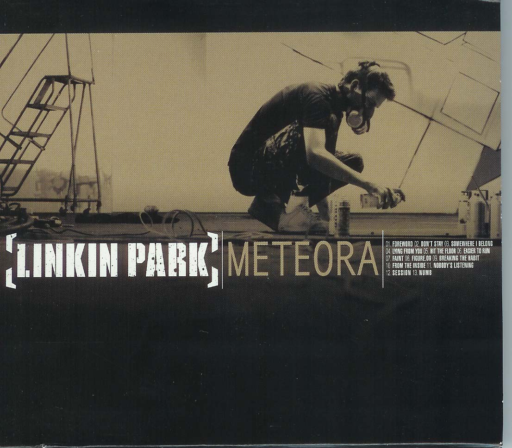

20周年記念盤

『ハイブリッド・セオリー：20周年記念盤』を2020年10月9日にリリースすると発表された。同時に未発表のデモ曲「She Couldn't」も発表。 オリジナル収録曲をはじめ、リミックスアルバム『リアニメーション』、『Hybrid Theory EP』、そしてシングル曲の各種B面、デモ曲、ライブ録音、リミックスを収録。 さらに、ファンクラブ限定のレア音源や未発表曲、未公開ライブ映像やヨーロッパでのフルライブ映像を収めたDVD、未公開資料を集めたイラスト付きブック等をセットにしたスーパー・デラックス版もリリース。On Sale ￥2,688（税込）
もっと見るアメリカとイギリスのアルバム・チャートで1位を獲得。日本では、オリコンアルバムチャートで最高6位。
タイトルは、ギリシャの世界遺産、メテオラに因んでいる。これはブラッド・デルソン曰く、「ヨーロッパをツアーしてた時だよ。バスの中に運転手が旅行誌を置いてたんだけど、その雑誌がメテオラって場所を特集してたんだ。で、その並み外れた場所の写真を見て……僕達は、その写真が視覚的に訴えるものを音にしてみようってインスパイアされたんだよ」とのこと。さらに、「アルバムのメインになるようなものさえ書いてない時だったから、デモを作るときに僕達がヴィジュアル的に見たものがマジで影響したんだ
One Step Closer
「"One Step Closer" は、アメリカのロックバンド、リンキンパークのデビューシングルです。
もっと見る「20th Anniversary Edition」

私たちのファンへのすべての感謝の気持ち
この壮大な旅を誰が作ったのか、私たちは20年前に始めました。 私たちはあなたに私たちの音楽を捧げます。